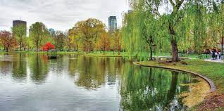
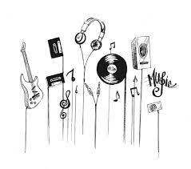
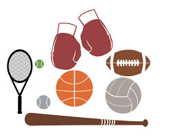

Going on walks is one of my top favourite things to do because its a time where I am super relaxed and at peace.

Music is probably my most favourite thing ever. It helps me be more relaxed, it helps to focus, and there is music for literally every mood that exists.

Sports have been a lifetime favourite for me, as they are good for my health, they are a very fun way to hangout with people, and you can get competetive.
